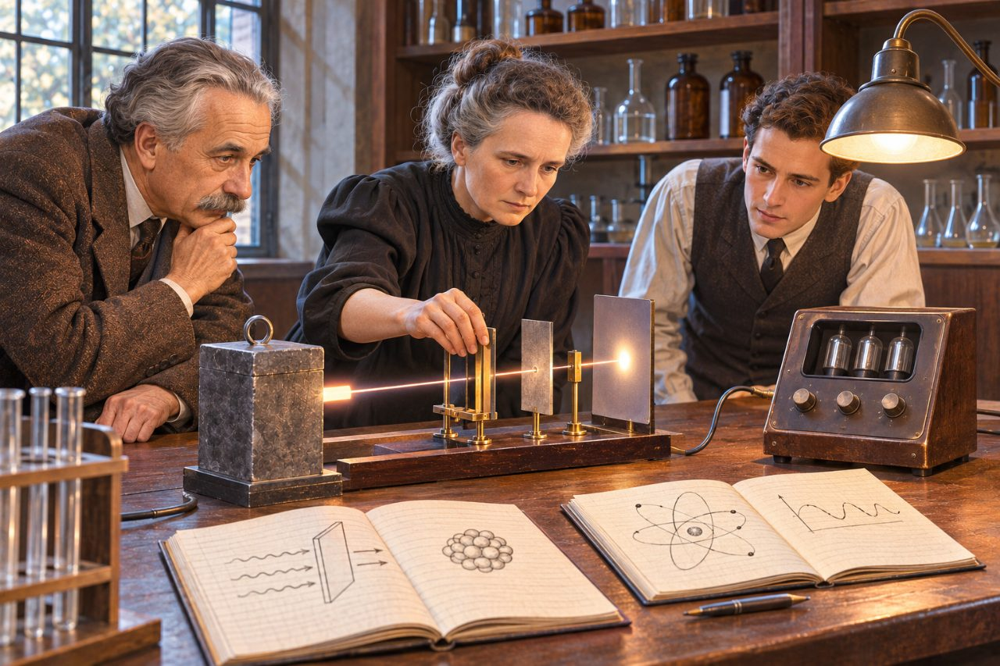

Kerne unter Beschuss

Denk mal nach: Aus dem Metallkasten kommt ein Strahl und trifft auf eine Probe. Was wollen die drei wohl herausfinden?
In den 1930er-Jahren hatten eine neue Idee: Sie lenkten Teilchen auf alle möglichen Stoffe und schauten, was mit den passiert. So hofften sie, bisher unbekannte Atomsorten zu finden.
Besonders gut eignen sich dafür. Sie tragen keine elektrische Ladung, werden also vom Kern nicht abgestoßen – und können deshalb bis in den Kern hineinfliegen.
Berlin, 1938. Die beiden Otto Hahn und Fritz Strassmann bestrahlen mit Neutronen. Uran ist das schwerste , das in der Natur vorkommt: 92 stecken in jedem Kern.
Ihr Plan: Ein Urankern fängt ein Neutron ein und wird dadurch noch schwerer. So müsste ein ganz neues Element entstehen – schwerer als Uran. Doch als sie die Probe untersuchen, finden sie etwas völlig anderes: . Das ist viel leichter als Uran. Wie kann das sein?
MERKE
- 1938 bestrahlten Otto Hahn und Fritz Strassmann Uran mit Neutronen.
- Sie wollten schwerere Kerne erzeugen – fanden aber Barium, ein viel leichteres Element.
- Das konnte niemand erklären. Aber es musste aus dem Uran entstanden sein.
Wer oder was ist das?
Tippe links einen Namen oder Begriff an und dann rechts die passende Erklärung.
Lise Meitner erklärt es
Lise Meitner war . Rund 30 Jahre lang hatte sie in Berlin mit Otto Hahn zusammen geforscht. Doch 1938 musste sie aus Deutschland fliehen: Sie stammte aus einer jüdischen Familie, deshalb verfolgten die Nationalsozialisten sie. Sie fand Zuflucht in Schweden.
Dorthin schrieb ihr Hahn einen Brief: Barium im Uran – was ist da passiert? Meitner dachte scharf nach. Ihr Grundsatz: Kein Teilchen kann einfach verschwinden.
Ihre Rechnung: Uran hat 92 Protonen, Barium nur 56. Wo sind die übrigen 92 − 56 = 36 Protonen? Sie müssen in einem zweiten Kern stecken. Das Element mit 36 Protonen ist – ein Gas. Deshalb war es im Versuch nicht aufgefallen.
Der Urankern ist also in zwei Teile zerbrochen: Barium und Krypton. Meitner gab dem Vorgang seinen Namen: .
Rechne wie Lise Meitner: Wähle das Element, das im Versuch gefunden wurde. Der Rechner zeigt, welches zweite Element dazugehören muss. Probiere alle drei aus.
| Gefundenes Element | Protonen | Rechnung | Zweiter Trümmerkern |
|---|
Extra: Lise Meitner – die Frau hinter der Erklärung
Meitner besprach Hahns Brief in den Weihnachtsferien 1938 mit ihrem Neffen Otto Frisch, auch er Physiker. Gemeinsam erklärten sie, wie der Kern zerbricht, und schätzten ab, wie viel Energie dabei frei wird. Den für die Entdeckung bekam 1944 allein Otto Hahn. Lise Meitner ging leer aus – heute gilt das als große Ungerechtigkeit. Seit 1997 trägt das Element 109 ihren Namen: Meitnerium.
MERKE
- Lise Meitner erklärte den Versuch: Der Urankern ist in zwei Teile zerbrochen.
- Kein Teilchen verschwindet: Uran hat 92 Protonen, Barium 56 → der zweite Kern hat 92 − 56 = 36 Protonen. Das ist Krypton, ein Gas.
- Meitner prägte den Begriff Kernspaltung.
So wurde die Kernspaltung entdeckt
Bringe die Schritte mit den Pfeilen in die richtige Reihenfolge.
Der Brief nach Schweden
Tippe zuerst auf eine Lücke, dann auf das passende Wort. Zwei Wörter bleiben übrig.
Rechne wie Lise Meitner
Bei einer anderen Spaltung entsteht Lanthan-147. Rechne mit den Protonen und mit den . Die Tabelle hilft dir.
| Element | Protonen |
|---|---|
| Cäsium | 55 |
| Barium | 56 |
| Lanthan | 57 |
| Element | Protonen |
|---|---|
| Selen | 34 |
| Brom | 35 |
| Krypton | 36 |
| Rubidium | 37 |
Erkläre in eigenen Worten ✨ KI prüft
Schreibe ganze Sätze oder Stichpunkte. Die KI achtet nur auf den Inhalt, nicht auf die Rechtschreibung.
So läuft die Spaltung ab
Nicht jedes Uran lässt sich spalten. Uran gibt es als verschiedene : Uran-238 ist das häufigste, aber nur Uran-235 zerbricht leicht, wenn es ein Neutron einfängt. Die Zahl ist die Massenzahl: 92 Protonen + 143 Neutronen = 235 Kernbausteine.
Fängt ein Uran-235-Kern ein Neutron ein, ist er für einen winzigen Augenblick ein Uran-236-Kern. Dieser Kern ist sehr unruhig: Er schwingt, verformt sich wie eine Hantel – und zerbricht.
Was entsteht? Zwei etwa gleich große , zum Beispiel Barium-144 und Krypton-89. Es gibt etwa 200 verschiedene Spaltprodukte – welche beiden entstehen, ist Zufall.
Außerdem fliegen bei jeder Spaltung 2 oder 3 neue Neutronen heraus, es entsteht , und eine riesige Menge Energie wird frei. Rechne nach: 235 + 1 = 236 = 144 + 89 + 3. Kein Kernbaustein geht verloren.
MERKE
- Ein Neutron trifft einen Uran-235-Kern → kurz Uran-236 → der Kern schwingt, verformt sich und zerbricht in zwei Trümmerkerne (z. B. Barium-144 und Krypton-89).
- Dabei entstehen immer 2 oder 3 neue Neutronen, γ-Strahlung und sehr viel Energie.
- Etwa 200 verschiedene Spaltprodukte sind bekannt.
Die Spaltung Schritt für Schritt
Was stimmt?
Gewaltige Energie
Die beiden Trümmerkerne rasen mit hoher Geschwindigkeit auseinander. Sie haben also sehr viel . Schon nach kurzer Strecke stoßen sie mit anderen Atomkernen zusammen und geben die Energie an sie weiter.
Die angestoßenen Kerne schwingen heftiger – und je heftiger die Teilchen eines Stoffes schwingen, desto heißer ist er. Die wird also zu Wärme. Genau diese Wärme nutzt man im Kernkraftwerk, um Strom zu erzeugen.
Wie viel Energie ist das? 1 g reines Uran-235 liefert etwa 100 Millionen . Verbrennt man 1 g Kohle, bekommt man nur etwa 29 kJ. Ein winziges Stück Uran ersetzt also ganze Berge von Kohle.
Mit der Entdeckung begann das . Die gewaltige Energie wurde aber nicht nur in Kraftwerken genutzt: Nur sieben Jahre später, 1945, brachte die Atombombe unsägliches Leid über die Menschen in Hiroshima und Nagasaki.
Schiebe den Regler oder tippe auf einen Knopf: Wie viel Kohle liefert dieselbe Energie wie dein Stück Uran-235? Probiere 1 g und 1 kg aus.
MERKE
- Die Trümmerkerne fliegen sehr schnell auseinander und stoßen Nachbarkerne an → die Kerne schwingen heftiger → die Materie wird heiß. So wird Kernenergie zu Wärme.
- 1 g Uran-235 liefert etwa 100 Millionen kJ, 1 g Kohle nur etwa 29 kJ.
- Diese Energie nutzt man im Kernkraftwerk – sie wurde aber auch für die Atombombe missbraucht.
Woher die Wärme kommt
Tippe zuerst auf eine Lücke, dann auf das passende Wort. Zwei Wörter bleiben übrig.
Kernspaltung oder Kohlefeuer?
Tippe eine Karte an und dann den passenden Bereich.
Erkläre in eigenen Worten ✨ KI prüft
Schreibe ganze Sätze oder Stichpunkte. Die KI achtet nur auf den Inhalt, nicht auf die Rechtschreibung.
Training
Löse das Kreuzworträtsel
Tippe in ein Kästchen und schreibe. Tippst du ein Kästchen zweimal an, wechselt die Richtung. Ä schreibst du als AE. Hängst du fest? Bei jeder Frage hilft 💡 Tipp – erst ein Hinweis, dann der Anfangsbuchstabe. Mit 📋 Wörter zeigen siehst du alle Lösungswörter.
Kreuze an
Profi-Check, Lernkarten und Regelheft
Die Entdeckung der Kernspaltung
1938 bestrahlten Otto Hahn und Fritz Strassmann Uran mit Neutronen. Sie wollten schwerere Kerne erzeugen – fanden aber Barium, ein viel leichteres Element.
Lise Meitner erklärte es: Der Urankern ist zerbrochen. Uran hat 92 Protonen, Barium 56 → der zweite Kern hat 92 − 56 = 36 Protonen: Krypton (ein Gas). Sie nannte den Vorgang Kernspaltung.
Ablauf: Neutron trifft Uran-235 → kurz Uran-236 → der Kern schwingt, verformt sich und zerbricht in zwei Trümmerkerne (z. B. Barium-144 + Krypton-89) + 2 oder 3 neue Neutronen + γ-Strahlung + sehr viel Energie.
Kernenergie: Die Trümmerkerne rasen auseinander, stoßen Nachbarkerne an → die Kerne schwingen heftiger → die Materie wird heiß. Diese Wärme nutzt das Kernkraftwerk; sie wurde auch für die Atombombe eingesetzt.
| 1 g Uran-235 | etwa 100 000 000 kJ (100 Millionen) |
|---|---|
| 1 g Kohle | etwa 29 kJ |
Wortspeicher
Alle Fachbegriffe dieses Moduls auf einen Blick.
Wie geht es weiter?
Bei jeder Spaltung fliegen 2 oder 3 neue Neutronen heraus. Was passiert, wenn jedes davon wieder einen Urankern trifft – und dann wieder? In Modul 2 startest du eine Kettenreaktion und lernst, wie man sie steuert.